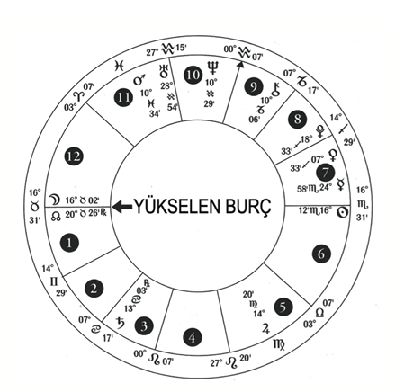
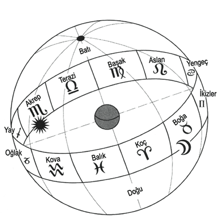
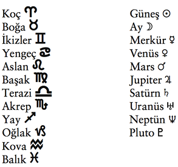
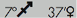

6. Bölüm: Horoskop: Uzay ve Zamanı Haritalamak
- Bilge adam, herhangi bir şeyde bir başka şeyi okuyabilen adamdır.
Plutonius, The Enneads
Astrolojik haritanıza horoskop denir. Horoskop sözcüğü, horo “saat” ve scope “görüş” Yunanca sözcüklerinden gelmektedir. Horoskopunuz, doğum saatinizdeki gezegenlerin görünüşünü simgeler. Antik Yunan zamanına kadar (M.Ö. beşinci yüzyıl) horoskoplar sadece ülkeler, olaylar ve krallar için çıkarılıyordu. Antik Yunanlılar astrolojiyi demokratikleştirdiler. Sizin benim gibi sıradan insanların astrolojinin ezoterik biliminden yararlanmasına olanak tanıyan bireysel doğum haritası kavramını yarattılar.
Astrolojik haritalar uzay ve zamanın haritalarıdır. Şekil 2’deki harita Los Angeles, California’da, 8-Kasım-2003’te, saat 16:51’de, bazı astrologlar ve şamanlar tarafından Kova Döneminin (Age of Aquarious) başladığını gösteren uğurlu bir uyum anında çıkarılmıştır. Bu haritayı kullanarak astrolojinin aşağıdakileri de içeren temel dili ve simgeleri ile tanışabilirsiniz:

Şekil 2: Los Angeles, California’da, 8Kasım2003’te, saat 16:51’de çıkarılan harita
Ayrıntılı incelemeye geçmeden önce haritaya bir bütün olarak bakmayı her zaman öneririm. Astroloji hakkında hiçbir şey bilmiyorsanız, harita size anlaşılmaz karışık çizgilerle dolu gibi geliyorsa bile rahatlayın ve onu incelemeyi sürdürün. Haritanın sizi eğitmesine izin verin. İşte size bir sır: Bu kitabı okuyor olmanız, yıldızların bilgeliği ile ilgilendiğinize, bu da sizin geçmiş bir yaşamda astrolojiye girmiş olduğunuza işaret eder. (Belki de o geçmiş yaşamda ben sizin kitabınızı okuyordum.)

Şekil 3: Zodyak kuşağı.
Şekil 2’yi ve kendi haritanızı incelemek için birkaç dakikanızı ayırın. Harita neye benziyor veya size neyi anımsatıyor? Hiçbir şekil görebiliyor musunuz? Bu, gökyüzünde bulut oluşumlarına bakmak ve şekiller veya imgeler görmek gibidir; yalnız burada siz, yıldız oluşumlarına bakıyorsunuz. Ve şimdi aynı şeyi kendi haritanız ile yapın.
Doğum haritası gezegenlerin ve takımyıldızlarının konumlarını, doğum anınızda yeryüzünden görüldüğü haliyle gösterir. Uzay (doğum yeri) ve zaman (doğum tarihi ve saati) kanunları ile bağlı maddi dünyamıza, ruhunuzun vardığı yeri işaretler. Ve kim olduğunuzu, bu yaşamdaki hedefinizi, bu dünyada neyi düzelteceğinizi (Tikkun’unuzu) ve bunu nasıl yapacağınızı açıklar.
Burçların (veya takımyıldızların) zodyak çemberi, yeryüzünün ekvatoru çevresinde, Pluto hariç tüm gezegenlerin döndüğü yaklaşık 15 derece genişliğinde bir kuşaktır.
Yeryüzünü, 360 derecelik panoramik pencereli yuvarlak bir oda olarak düşünün. Pencere, her biri ayrı renkte ve ayrı ad altında on iki eşit dilime ayrılmış. İlk dilim kırmızı ve adı Koç. İkincisi kırmızı-turuncu ve adı Boğa. Onun yanındaki turuncu ve adı İkizler, vb. Geceleri, odanın ortasında oturup dairesel cam şeritten gezegenleri ve yıldızları izleyebilirsiniz. Boğa adındaki ikinci cam dilimden ayın göründüğünü farke-dersiniz; bunun anlamı, ayın Boğa burcunda olduğudur. Odanın 360 derecelik görüntüsünü simgeleyen bir çember çizer, bunu her biri 30 derece olan on iki dilime ayırır ve sonra her cam dilimden görünen gezegeni, ilgili yerine yerleştirirseniz o gecenin astrolojik haritasını çıkarmış olursunuz.
Şekil 3’te güneşin, zodyakın Akrep diye adlandırılan kısmında parladığı görülmektedir. Bunun anlamı bu imgenin, yörüngesini izleyen yeryüzünden bakıldığında güneşin Akrep’te, kabaca 23 Ekim-22 Kasım arasında yer aldığı zaman çekilmiş olduğudur.
Daire 360 derece olduğuna göre on iki burcun her biri, zodyak kuşağının 30 derecelik bir dilimini kapsar. Bu 30 derece, güneşin her burçta kabaca 30 gün kaldığına işaret eder.
Koç (19 Mart-19 Nisan)1
1 Burçlara atanan tarihler, yıldan yıla biraz değişir
Boğa (20 Nisan-20 Mayıs)
İkizler (21 Mayıs-20 Haziran)
Yengeç (21 Haziran-22 Temmuz)
Aslan (23 Temmuz-22 Ağustos)
Başak (23 Ağustos-22 Eylül)
Terazi (23 Eylül-22 Ekim)
Akrep (23 Ekim-22 Kasım)
Yay (23 Kasım-21 Aralık)
Oğlak (22 Aralık-19 Ocak)
Kova (20 Ocak-18 Şubat)
Balık (19 Şubat-20 Mart)
Gezegenlerin ve Burçların Simgeleri
İzleyen liste, kendi haritanızı incelerken gördüğünüz işaretleri ve simgeleri tanımlamanıza yardım edecek.

Kozmik sorular: Ne, nasıl ve nerede?
Astrolojinin dili, şu üç birincil bileşeni çok iyi bilmeyi gerektirir: Gezegenler, burçlar ve evler.
Gezegenler (güneş ve ay dahil) ne tip enerjinin harekete geçirildiğini saptar. Gezegenler arketiplerin enerjilerini üretir. Güneş, örneğin, yaratıcılığı ve kendini ifadeyi harekete geçirir.
On iki burç, enerjinin yaşamımızda nasıl ortaya çıktığını saptar. Burçları, saf enerjinin gücünü veya rengini değiştiren filtreler olarak düşünmek yardımcı olabilir. Örnek olarak, bir lambadan çıkan beyaz ışık, lambanın üzerine mavi filtre yerleştirdiğimizde mavi, kırmızı filtre yerleştirdiğimizde kırmızı gözükür. Güneş Balık burcunda iken, örneğin, kendini ifade enerjisi, dans, şiir, hayal kurma ve gizemcilik filtresinden geçerek görünür; öte yandan, aynı güneş Koç burcunda iken kendini ateşli atletizm, liderlik veya militanlık olarak gösterebilir.
On iki ev, filtereden geçmiş bu enerjinin yaşamımızda nerede görüneceğini saptar. Güneş Balık burcunda onuncu evde iken birey, kariyerinde (onuncu ev) profesyonel dansçı olarak (Balık) kendini ifade eder (güneş).
On iki evin her biri, değişik bir yaşam dilimini yönetir. Bu alanlar sırasıyla şöyledir: Kişilik (birinci ev), para ve yetenek (ikinci ev), kardeşler ve iletişim (üçüncü ev), ev ve aile (dördüncü ev), çocuklar ve aşk (beşinci ev), iş ve sağlık (altıncı ev), ilişkiler ve evlilik (yedinci ev), cinsellik ve ölüm (sekizinci ev), eğitim ve seyahat (dokuzuncu ev), kariyer ve başarı (onuncu ev), toplum ve arkadaşlar (on birinci ev), karma ve zorluklar/ meydan okumalar (on ikinci ev). 10. Bölüm evleri ve önemlerini daha ayrıntılı olarak tartışmaktadır.
Büyük resimde bize yardımcı olması için gezegenlere ne sorusunu soralım. Diğer bir deyişle, her gezegen ne tip enerji simgelemektedir?
Güneş nedir?
-Kendini ifade ve yaratıcılık.
Ay nedir?
-Duygusal ifade.
Venüs nedir?
-İlişkiler, paraya karşı olan tutum ve sanatsal ifade.
Mars nedir?
-Tutku, güç, enerji ve eylem.
Merkür nedir?
-Zekâ ve iletişim becerileri.
Satürn nedir?
-Disiplin, hırs ve dayanıklılık.
Jupiter nedir?
-Bereketin, hediyelerin ve açılımın nasıl kabul edildiğine
İşaret eden en iyi arkadaş.
Uranüs nedir?
-Bireysellik ve biricik olmak.
Neptün nedir?
-İçteki gizemcilik, hayal gücü.
Pluto nedir?
-Cinsellik ve güç.
Doğal olarak, bu enerjiler kendilerini çeşitli tarz ve biçimlerde ifade ederler. Bu bizi, burçların simgelediği ve etkilediği nedene getirir. Bu belirli enerji (gezegen) yerküreye nasıl geliyor? Gezegenler yaşamımızdaki varlıklarını, burçların biçmesinden (prizma) geçerek belli ederler. Örnek olarak, saf gücün enerjisi olan Mars, Koç burcunun filtresinden geçtiğinde saldırgan bir tarz sergiler. Aynı güçlü Mars, Oğlak burcunun filtresinden geçtikten sonra burcun sunduğu emir ve yapıya kesin uyum gösteren disiplinli bir asker olur.
Evler bize, gezegenlerin ve burçların enerjisinin yaşamın neresinde en çarpıcı şekilde ortaya çıkacağını söyler. Mars Oğlak burcunda iken ikinci ev olan para evinde bulunuyorsa, bu kişinin para konusunda disiplinli olmasına neden olabilir. İlişkiler evi olan yedinci evde ise aynı oluşum, kişinin disiplinli insanlardan hoşlandığını düşündürebilir.
Uygulama yapmak için Şekil 2’deki örnek haritada Venüsü bulun. Venüsün simgesini yedinci evin üst kısmında Yay burcunda bulacaksınız. Bunun anlamı, bu haritanın sahibi için iyi bir eşin/ortağın (yedinci ev) güçlü bir sanatsal duyarlılığa (Venüs) sahip bir yabancı (Yay burcu yabancı kültürleri yönetir) olabileceğidir.
Haritanızdaki her evde bir gezegen olmayabilir. Örnek haritada ikinci ve dördüncü evler boştur. Yine de her ev bir burç tarafından yönetilir ve o burç, yaşamınızın o alanının enerji ifadesini gösterir. Örnek olarak, İkizler burcu altıncı evde olan bir adam, o evde hiçbir gezegen olmasa bile, bir yazar veya bir bilgi işlemcisi olarak çalışma eğilimindedir çünkü altıncı ev iş evidir ve İkizler burcu, mesajları ve yazmayı yönetir.
Ben haritaya ve ev bölümlerine, bir savaş strateji haritası olarak bakıyorum. (Bu benzetmenin biraz militan olduğunu biliyorum ama ben bir Koçum ve dolayısıyla askeri örneklerden hoşlanıyorum.) Haritaya baktığınızda onu BBE (Benim Birleşik Eyaletlerim) adında bir ülke olarak hayal edin. Evlerin her biri birliğinizin, sınırları denetlenmesi ve korunması gereken birer eyaletidir. Savaşacak, istilaları önleyecek ve gelişen bir ülkeyi güven altına alacak- her biri değişik güce, yeteneğe ve zayıflığa sahip- on alayınız (gezegen) vardır. Bunlar piyade (Satürn), hava (Merkür), komando (Mars), büyülü savaşçı (ay), casus (Pluto), haberalma (Uranüs), topçu (Jupi-ter) ve deniz (Neptün) kuvvetleridir. Bunlara ek olarak bir de kumanda merkeziniz ve sermayeniz (güneş), hiçbir ordu boş mideye talim edemeyeceği için yiyecek ve malzeme ile uğraşan bir taburunuz (Venüs) vardır. Doğmadan önce ruhunuz, mümkün olduğu kadar çok yaşam alanına hakim olmanızı sağlamak amacı ile enerji “ordularınızın” nasıl dağıtılacağına karar verir.
Bir önceki yaşamınızda biraz cimri olduğunuz için bu sefer hayırsever işler için büyük paralar kazanmaya karar vermiş olabilirsiniz. Dolayısıyla, para evi olan üçüncü eve üç tabur (gezegen) ve kumanda merkezinizi (güneş) koymaya karar verirsiniz ve insancıl amaçları yöneten eve, on birinci eve üç göksel cisim yerleştirirsiniz. Başkalarını çalışmalarınıza çekmek için karizmatik bir lider olmanız gerektiğini düşünürsünüz ve bu yüzden, ateşli Marsı liderlik evi olan ilk eve koyarsınız. Sonra kariyer evinize hırs ve başarı getirmek için birkaç tabur yerleştirirsiniz. Böyle özel bir odaktan dolayı ruhunuz, birçok evi çıplak bırakmış olabilir. Aile evinde, sağlık evinde veya ilişkiler evinde hiçbir şey yoktur. Bu yüzden savunma bakanınıza (yaşam sonrasındaki kılavuzunuza) “Belki de bir taburu para evinden alıp aile evine geçirmeliyim. Çocuk sahibi olmayı gerçekten istiyorum” dersiniz. Ve böylece, yukarıdaki büyülü eterdeki yüksek nefsinizle sıkı müzakereler başlamıştır.
On İki Havariniz: Haritanızın Evleri
On iki ev, havariniz olarak size hizmet etmektedir. Yaşamınızın enerjisini taşırlar. Her evin onu yöneten bir burcu vardır. Burca, evin kapıcısı veya anahtarı olarak bakabilirsiniz. İçerdeki enerjiye erişmek için kapıcıdan geçmek veya anahtarı kullanmak zorundasınız. Her evi yöneten burcu, haritanızın dış çemberinde bulabilirsiniz. Evin başlangıcındaki burç, o evi yönetir.
İlk evin kapıcısı, yükselen burcunuzdur (Bakın, 8. Bölüm). Yükselen burçtan saatin aksi yönünde (artı yönde) hareket ettiğinizde ikinci evi yöneten bir sonraki burca rast gelirsiniz. İkinci evin başlangıcının sınır çizgisinin tam yanında onu bulacaksınız. Örnek haritada (Şekil 2) ikinci ev 14 derece İkizler tarafından yönetiliyor. Yine saatin aksi yönünde (artı yönde) gittiğinizde bu haritada 7 derece Yengeç olan üçüncü evin burcuna rast geleceksiniz. Bunun anlamı, zekâ evi olan üçüncü eve girişin, Yengecin duygusal enerjilerinde yatmakta olduğudur. Bu evin enerjisini elde etmek istiyorsanız duygularınızı (Yengeç) anlatabilmelisiniz (üçüncü ev).
On iki burç tarafından yönetilen on iki eve sahip olmamız, astrolojinin önemli bir önermesidir: Tüm burçları içinizde taşıyorsunuz! Sizin için, güneşiniz en önde gelebilir ama kişiliğinizde ve gelişmenizde her burcun bir rolü vardır. Yay burcunda hiçbir gezegeni olmayan bir Kova olabilirsiniz ama Yay burcu sizin kariyer evinizi yönetmektedir, dolayısıyla yaşamınızın o alanında başarılı olabilmek için Yay arketipini beslemek zorundasınız. Bazı burçlar yaşamınız üzerinde daha önemli bir etkiye sahiptir ama hepsinin bir kilit amacı vardır. İyi bir kozmik gezgin, bu yüzden her burcun dilini konuşabilmelidir.
Birinci ev bedeni, fiziksel görünüşü, liderlik yeteneklerini, tavırları, tutumları ve hastalığa karşı direnci yönetir. Bazı astrologlar bunu sizin maskeniz veya insanların sizi algılayışı olarak tanımlar. Yunancada persona, “maske” demektir ve sizin kişiliğinizi veya benliğinizi (egonuzu) belirtir. O sizin sancak geminizdir, yükselen burcunuzdur (Bakın, Bölüm 8).
İkinci ev yetenekleri, parayı, finansı, değerleri ve öz-değe-ri yönetir. Parayı, varlıkları, kişisel malları ve bütçeyi nasıl ele aldığınızı gösterir. Öz-değeriniz, yeteneklerinize ne kadar güvendiğinizi ve bu yetenekleri ne denli iyi paraya çevirebil-diğinizi saptar.
Üçüncü ev zihnin, kardeşlerin, komşuların ve (anne babanız hariç) akrabalarınızın evidir. Ön eğitim, iletişim, okuma tercihleri ve pratik mantıksal zihin de onun yönetimi altındadır. Bu ev aynı zamanda, ulaşımı, ulaşım araçlarını, arabaları, uçakları etkiler ve bir gün, ümit ediyorum ki uzay gemileri de buna dahil olacaktır.
Dördüncü ev, kendinizi güvencede hissettiğiniz evinizi ve aileyi simgeler. Bir yetişkin olarak kurduğunuz ev ve aileden başka çocukluk evinizi ve ailenizi de betimler. Anneniz ile, anne figürünüz ile ve yaşlanmak ile ilişkileriniz hakkında bilgi verir.
Beşinci ev yaratıcılığı, sevgiyi, aşkı, eğlenceyi, sporu, kurguları (spekülasyon), ağırlamayı/ağırlanmayı, tiyatroyu ve çocukları yönetir. O mutluluk evidir. Bu ev aynı zamanda iç çocuğunuzu içerir. Beşinci evin enerjileri üzerinde çalışarak bu iç çocuğunuza bağlanabilirsiniz (ve onu iyileştirebilirsiniz).
Altıncı ev fiziksel sağlık, hastalık, iş, hizmet, arınma, hijyen, beslenme ve düzen evidir. Aynı zamanda evcil hayvanları ve ev hayvanlarını yönetir. Bu ev çalışanlarınızla nasıl ilgilendiğinizi ve otorite dağıtımını ne kadar iyi yapabildiğinizi gösterir.
Yedinci ev güzelliği, evliliği, ortaklığı, anlaşmaları, kanunu ve adaleti, aynı zamanda bilinen düşmanlarımızı ve davaları yönetir. Bu ev, sizin ahenginizin ve huzurunuzun anahtarını taşır.
Sekizinci ev ölümün, cinselliğin, ortak mali işlerin, samimi yakınlığın, doğaüstünün, başka insanların parasının ve mirasın evidir. Vergileri, sigortayı, ortağınızın kazancını, nafakayı ve iş ortağınızın mali işlerini yönetir. Bu ev, korktuğunuz şeyleri saklayan gizli odalar ve zindanlar içerir.
Dokuzuncu ev ahlâkı, seyahati, kehaneti, üst eğitimi, yayımcılığı, üniversiteleri, kiliseleri, tapınakları, felsefeyi ve dini yönetir. Aynı zamanda evlilikle gelen akrabaların evidir. Bu ev, gerçeği nasıl yaşadığınızı ve yaşamın anlamını nasıl algıladığınızı açıklar.
Onuncu ev elde edilenleri/yapılanları, profesyonel durumu, başarıyı, toplumdaki konumu ve kariyeri yönetir. Otoritenin ve toplumun evidir. Bu ev, yaşamda tırmanmanız gereken dağı anlatır, hırsınız ve gizilliğinizi gerçekleştirme yetiniz hakkında fikir verir. Antik Yunan geleneğinde bunun adı, ünümüz, şöhretimiz, nasıl hatırlanacağımız demek olan Kleos’tur.
On birinci ev geleceğin, serbest gelirin, arkadaşlığın, grupların, işbirliğinin, teknolojinin, umudun ve hayırseverliğin evidir. Bu ev, grup içinde nasıl çalıştığınızı, insanlarla olan ilişkinizin doğasını açıklar.
On ikinci ev karmayı, şefkati, kapatılmayı/tecriti, hastaneleri, gizemciliği, iyileşmeyi, hayal gücünü, inancı ve geçmiş yaşamları yönetir. Aynı zamanda acı, kişisel sınırlar ve gizli düşmanlarınız ile ilgilidir. Geçmiş yaşamlardan sahip olduğunuz ve ulaşılması zor yetenekleri gösterir.
Evlerdeki Gezegenleri Yorumlamak
7. ve 10. Bölümler arasında güneşin, ayın ve gezegenlerin, burçların ve evlerin her birinde gözüktükleri şekliyle genel bir yorumunu bulacaksınız. Bunların genelleştirilmiş ve basitleştirilmiş yorumlar olduğunu ve hiçbirinin size kim olduğunuzu açıklayamayacağını bilin. Bu kitaptaki çeşitli yorumlardan sizi ilgilendirenleri bir araya getirmelisiniz. Böylece ruhunuza ve kaderinize şöyle bir bakmış olursunuz. Haritanızda göreceğiniz gezegensel ilişkileri, bu listeleri kullanarak en iyi şekilde yorumlayabilmek için bazı genel kuralları aşağıda bulacaksınız.
Evler ve enerjileri, burçların karşılığıdır. Birinci evin bağlantıları, birinci burç Koç ile aynıdır. Her ikisi de kimliği ve kişiliği yönetir; her ikisi de lideri simgeler. İkinci ev niteliklerini ikinci burç Boğadan alır; üçüncü ev üçüncü burç İkizlerden, vb. Haritanızdaki gezegenleri yorumlarken ilkönce gezegenin yerini bulun ve burcunu tanımlayın. Sonra o gezegenin hangi evde olduğunu saptayın. Sonra o gezegenin listesine geçin ve burç ile ev hakkındaki paragrafı okuyun. Örnek haritamızda (Şekil 2) ayın Boğa burcunda, on ikinci evde olduğunu göreceksiniz. 9. Bölümde, on ikinci evde ayın anlamını açıklayan paragrafı okuyun. Ayrıca, ayın ikinci evdeki açıklamasını da okuyun çünkü Boğa ikinci burçtur ve ikinci evdeki bağlantıları paylaşır.
Başka bir örnek: Örnek haritada, yedinci evde  simgelerini göreceksiniz. Bunun anlamı Venüsün, Yay burcunun 7 derece 37 dakikasında yer aldığıdır. Bu kurulumun önemini anlamak için ilkönce 10. Bölümün Venüs listesine gidin ve Venüsü Yay burcunda kısmını okuyun. Sonra, bu enerjinin yaşamınızın hangi alanında en çarpıcı etkiyi yapacağını saptamak için Venüs yedinci evde, veya Venüs Terazi burcunda (yedinci burç), bölümünü okuyun çünkü Terazinin nitelikleri yedinci evin nitelikleri ile aynıdır. Bu iki paragraf şu yorumu getirir: Evliliğe kadar gidebilen (Venüs yedinci evdeevlilik evinde), yabancılarla güçlü bağlantı (Venüs Yay burcunda).